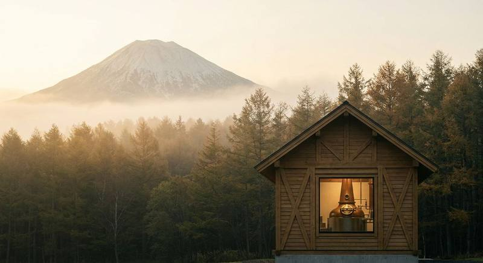

クラフトジン蒸溜所見学ツアー完全ガイド
全国12施設の予約・料金・コース

日本のクラフトジン蒸溜所はいま全国で100超に達していますが、一般向けに見学・ツアーを公開している施設は限られます。本記事では、World Gin Awards 2024 Classic Gin部門世界最高賞を獲得したニセコ蒸溜所から、日本初のジン専門蒸溜所として知られる京都蒸溜所の体験施設、TWSC 2024「Best of the Best」の本坊酒造マルス津貫蒸溜所、サントリー大阪工場（見学ツアー実施中・要予約）まで、安心して訪問できる主要12施設を、予約方法・営業時間・料金・所要時間・アクセス・周辺観光・地方別モデルコースで完全ガイドします。
最終更新: 2026年5月9日 ／ 出典: 各蒸溜所公式サイト・公式SNS（Gin-DB蒸溜所検証データ＝一次ソース確認済み）／ 営業情報は変動するため必ず公式サイトで最新情報をご確認ください
蒸溜所見学の楽しみ方
「ジンが生まれる現場」を体感する
クラフトジンは、ボタニカルを浸漬・再蒸溜する蒸溜釜（ポットスチル）から生まれます。蒸溜所見学では、銅製の蒸溜釜の輝き、ボタニカル素材の現物、製造現場の独特の香り（ジュニパーや柑橘の精油の薫り）を直接体感できます。本やSNSで読むのとは全く違う、五感での理解が得られるのが見学の最大の価値です。
- ① ニセコ蒸溜所
北海道 - ② 紅櫻蒸溜所
北海道 - ③ ニッカウヰスキー宮城峡蒸溜所
宮城県 - ④ 養命酒製造 駒ヶ根工場
長野県 - ⑤ 野沢温泉蒸留所
長野県 - ⑥ The HOUSE of KI NO BI
京都府 - ⑦ 京丹後 舞輪源蒸溜所
京都府 - ⑧ サントリー大阪工場
大阪府 - ⑨ サクラオB&D
広島県 - ⑩ 瀬戸内蒸溜所
広島県 - ⑪ 京屋酒造
宮崎県 - ⑫ 本坊酒造マルス津貫蒸溜所
鹿児島県
位置は都道府県の中心あたりに置いた目安です（正確な所在地は各見出しの見学情報を見てください）。
「土地の物語」を知る
各蒸溜所のジンには、その土地の風土・歴史・人間ドラマが凝縮されています。ニセコのヤチヤナギの自生地、薩摩の柑橘文化、廿日市の地御前産牡蠣、丹後の薬草が自生する山林。蒸溜所スタッフから直接聞く「なぜこのボタニカルなのか」のストーリーは、銘柄を「飲む」体験を「物語を読む」体験に変えます。
「世界最高賞の現場」に立つ
2024年WGA Classic Gin部門世界最高賞のohoro GIN（ニセコ）、2025年WGA Contemporary Style Gin部門世界最高賞の白兎プレミアム（鳥取）、SFWSC 2025 Best Overall GinのMAIRINGEN（京丹後）。世界の頂点を獲得したジンが作られている現場に立つ体験は、ジン愛好家にとって特別な意味を持ちます。日本のジン産業がこの数年で急速に成長した記念碑的な現場が、すぐ訪問できる距離にあるのが現代の特権です。
「現地限定銘柄」を入手する
多くの蒸溜所ではショップ限定銘柄や季節限定エディションを販売しています。ニセコのLimited Edition、紅櫻の各種シリーズ、和美人 The Forest等、ふだん店頭で見かけにくい銘柄を手に取れるのも蒸溜所見学の醍醐味。コレクター向けの一品が見つかります。
① ニセコ蒸溜所（北海道虻田郡ニセコ町）
代表銘柄: ohoro GIN Standard 47% / Limited Edition ／ 公式: niseko-distillery.com/ja
2024年WGAでClassic Gin部門世界最高賞を獲得した、いま日本で最も注目されている蒸溜所のひとつ。北海道ニセコ町ニセコ478-15に位置し、雪と森と火山の島・北海道の景観に溶け込む施設。世界最高賞を受賞した銘柄が作られている現場を直接見学できる体験は、ジン愛好家にとって特別な意味を持ちます。
見学情報
| 予約 | 必須（公式フォーム経由） |
| 所要時間 | 約60分 |
| 料金 | 4-11月 ¥1,500 ／ 12-3月 ¥2,000 |
| アクセス | JR ニセコ駅から路線バスまたはタクシーで約10分、新千歳空港から車で約3時間 |
見どころ
- ニセコアンヌプリの伏流水を仕込みに使う蒸留現場
- ツアー最後のニューポット試飲と、メニューから選べるドリンク1杯（運転手・20歳未満を除く）
- 限定エディション銘柄（Limited Edition ニホンハッカ・ラベンダー）の購入機会
周辺観光: ニセコリゾート（夏のアクティビティ・冬のスキー）、羊蹄山、洞爺湖。観光と組み合わせやすい立地です。
② 紅櫻蒸溜所（北海道札幌市）
代表銘柄: 9148 #0101 STANDARD 45% / 9148 #0303 NAVY STRENGTH 57% ほか ／ 公式: hlwhisky.co.jp
2018年創業、北海道初のジン蒸溜所。札幌市南区澄川の紅櫻公園内にあり、日高昆布・干し椎茸・切干大根・ブルーベリー（北海道産）を含む14種ボタニカルで構成された9148シリーズで知られます。札幌市内から車で30分程度のアクセスで、ニセコ蒸溜所と組み合わせる「北海道ジン2泊3日」コースの拠点としても便利です。
見学情報
| 営業時間 | 11:00〜16:00 |
| 定休日 | 日曜（祝日の場合は翌日） |
| 予約 | 少人数運営のため事前予約推奨（公式サイト・電話） |
| 料金 | 公式サイトで要確認 |
| アクセス | 地下鉄南北線 自衛隊前駅から徒歩20分 |
見どころ
- 紅櫻公園内という都市公園立地の珍しい蒸溜所
- 2F販売所での試飲販売（運転手・20歳未満を除く）
- 少人数運営ゆえの濃いスタッフ解説
- 9148シリーズの限定エディション（桜・フキノトウ・ホップ・パウダースノー等）
周辺観光: 札幌市街地（すすきの・大通公園・札幌時計台）、定山渓温泉。新千歳空港からも札幌経由で訪問できます。
③ ニッカウヰスキー宮城峡蒸溜所（宮城県仙台市）
代表銘柄: NIKKA COFFEY GIN 47% ／ 公式: nikka.com/distilleries/miyagikyo
仙台市青葉区ニッカ1番地、新川（にっかわ）と広瀬川に挟まれた渓谷地に1969年竣工した、ニッカウヰスキーの第二の故郷。本来はウイスキー蒸溜所として有名ですが、ニッカ カフェジンの製造もここで行われています（栃木工場ではなく、宮城峡蒸溜所が製造拠点です）。カフェジンを生む連続式蒸溜機「カフェスチル」がある蒸溜所です（ガイドツアーはウイスキーの製造方法やニッカの歴史が中心）。
見学情報
| 営業時間 | 9:00〜11:30 / 12:30〜14:30（時間枠制） |
| 予約 | 必要（前日まで。当日は空きがあれば受付で先着順） |
| 料金 | 無料（試飲込み） |
| 所要時間 | 約70分 |
| ギフトショップ | 9:15〜16:15 |
| アクセス | JR 作並駅から無料シャトルバス、仙台駅から車で約45分 |
見どころ
- 連続式蒸留機「カフェスチル」（1963年導入、1999年宮城峡へ移設）の実物
- ニッカウヰスキー全体の歴史と創業者・竹鶴政孝のストーリー
- ガイドツアー最後のテイスティング（見学は無料・試飲あり）
- ギフトショップでの限定アイテム購入
周辺観光: 作並温泉・松島・仙台市内。東北旅行の定番拠点として組み込みやすい立地。
④ 養命酒製造 駒ヶ根工場（長野県駒ヶ根市）
代表銘柄: 香の森 KANOMORI 47% / 香の雫 Kanoshizuku ／ 公式: 養命酒製造
薬用養命酒で知られる養命酒製造が手がけるクラフトジン。長野県駒ヶ根市の中央アルプス山麓に立地し、クロモジ（黒文字）を主役素材に据えた香の森（KANOMORI）はWGA 2025 Goldを獲得。香の雫はWGA 2024 Country Winner Goldと、薬草学の伝統を活かしたボタニカル知見が世界評価につながっています。駒ヶ根工場の「養命酒ミュージアム駒ヶ根」では、薬用養命酒の製造工程や歴史を予約不要・無料で見学できます（公式の見学案内にジン製造の紹介は記載なし）。
見学情報
| 予約 | 不要（団体・バスは要問い合わせ） |
| 開場時間 | 9:30〜16:30（最終入場15:30）、毎週水曜定休 |
| 料金 | 無料 |
| アクセス | JR 駒ヶ根駅からバス・タクシー、中央自動車道 駒ヶ根ICから車で約15分 |
見どころ
- 養命酒の歴史と健康酒文化の解説
- 中央アルプスの自然と散策路（春の新緑・秋の紅葉）
- 薬用養命酒のビン詰め・包装ラインの見学
- 直営ショップでの限定銘柄・グッズ販売
周辺観光: 駒ヶ岳ロープウェイ、千畳敷カール、伊那谷の自然。中央アルプス観光と組み合わせやすい立地。
⑤ 野沢温泉蒸留所（長野県下高井郡野沢温泉村）
代表銘柄: CLASSIC DRY GIN 48% / NOZAWA / SHISO GIN ／ 公式: 野沢温泉蒸留所
スキーリゾートと温泉地として有名な野沢温泉村に立地する蒸溜所。CLASSIC DRY GINは山椒・ビアフランカレモン・オリスルートを主要ボタニカルとして紹介する48%のジンで、WGA 2024でGoldを獲得。複数銘柄が世界評価を受けている実力派です。温泉旅行と組み合わせる蒸溜所訪問として人気。
見学情報
| 予約 | 公式サイトで要確認 |
| アクセス | JR飯山駅からバス、長野駅から車で約1時間 |
見どころ
- 山椒を「すべて手で剥き」使うCLASSIC DRY GINの設計
- 定番4種のジンの試飲（ジン・テイスティングは45分・おひとり様1,000円・要予約）
- 野沢温泉の温泉と組み合わせた1〜2泊コース
周辺観光: 野沢温泉外湯巡り（13ある「お湯」）、野沢温泉スキー場（冬季）、麻釜（あさがま）。温泉旅行のメインアクティビティに。
⑥ The HOUSE of KI NO BI（京都市中京区）
代表銘柄: 季の美 京都ドライジン 45.7% / 季の美 勢 / 季のTEA ／ 公式: kinobigin.com/ja-jp
「日本初のジン専門蒸溜所」を掲げる京都蒸溜所の体験施設。蒸溜所自体は南区にあり一般見学はできませんが、京都市中京区河原町通二条上る清水町358の「The HOUSE of KI NO BI（季の美House）」で、季の美のテイスティングや製法解説を体験できます。京都観光の合間に立ち寄りやすい中心部立地が魅力です。
見学情報
| 営業時間 | 水〜日 14:00〜20:00 |
| 定休日 | 月・火 |
| 予約 | 体験プログラムは公式サイトで予約推奨 |
| アクセス | 京都市営地下鉄 京都市役所前駅から徒歩5分 |
見どころ
- 11種ボタニカルを「6つのエレメント（礎・柑・凛・辛・茶・芳）」に分けて蒸留する独自製法の解説
- 季の美 京都ドライジン・勢・季のTEA・限定エディションのテイスティング
- 京都の伏見の名水を使った製法の説明
- 限定アイテム・グッズの販売
周辺観光: 京都御所・本能寺・先斗町・河原町。京都観光のついでに気軽に立ち寄れます。
⑦ 京丹後 舞輪源蒸溜所（京都府京丹後市）
代表銘柄: MAIRINGEN FRESH CRAFT GIN
SFWSC 2025（San Francisco World Spirits Competition）でBest Japanese Gin と Best Overall Gin のダブル受賞を果たした最大級セールスポイントの蒸溜所。標高620m、300種類以上の薬草薬樹が自生する丹後半島の山林で朝に手摘みした植物を、フレッシュなまま蒸留するのが特徴。MAIRINGEN FRESH CRAFT GINは蒸留当日に摘み取ったクロモジなど14種のボタニカルを使います。見学・購入は事前予約制です。
見学情報
| 予約 | 事前予約制（見学・購入とも） |
| アクセス | 京都丹後鉄道 網野駅から車で約30分、京都駅から車で約3時間 |
見どころ
- 標高620m、300種類以上の薬草薬樹が自生する山林の環境
- 朝摘みボタニカルの蒸留現場
- SFWSC世界最高賞銘柄MAIRINGENの製造工程
- 丹後地域の自然と組み合わせる訪問
周辺観光: 天橋立・伊根の舟屋・丹後ちりめん街道。京都北部の伝統文化と自然の組み合わせが魅力。
⑧ サントリー大阪工場（大阪市港区）
代表銘柄: ROKU〈六〉 47% / 翠 SUI 40% ／ 公式: suntory.co.jp/factory/osaka
大阪市港区海岸通3-2-30に位置する、1919年操業のサントリー現存最古の工場。敷地内の「スピリッツ・リキュール工房」でROKU〈六〉や翠（SUI）が製造されています。ROKUはWGA 2025 Gold（Classic Gin、Japan代表）とInternational Spirits Challenge 2025 "Best Distilled Gin" Trophyを獲得。2024〜2025年に55億円投資、2.6倍生産能力という大規模拡張を実施。現在は予約制の見学ツアーで、サントリーの洋酒づくりの歴史やROKU〈六〉を通じてスピリッツ・リキュール工房のものづくりを紹介しています。
見学情報
| 予約 | 見学ツアーは予約制（公式サイトから） |
| 営業時間 | 10:00〜16:00（年末年始・工場休業日を除く。臨時休業あり） |
| アクセス | 大阪メトロ 朝潮橋駅・弁天町駅から徒歩 |
見どころ
- ROKU〈六〉の和素材6種（桜花・桜葉・煎茶・玉露・山椒・柚子）と、素材の特長にあわせて4つの釜を使い分ける蒸溜の解説
- 翠（SUI）の和素材3種（柚子・煎茶・生姜）＋伝統8種の現場
- 1919年操業のサントリー最古工場の歴史
周辺観光: 大阪天保山・海遊館・USJ。大阪観光と組み合わせやすい都心立地。見学ツアーの空き枠は公式サイトで確認してください。
⑨ サクラオB&D（広島県廿日市市）
代表銘柄: SAKURAO GIN ORIGINAL 47% / LIMITED / HAMAGOU ／ 公式: sakuraobd.co.jp / sakuraodistillery.com
大正7年（1918年）創業の老舗・サクラオB&D（旧中国醸造）。HAMAGOUがWGA 2021でGoldと日本Country Winnerを受賞。本格的な有料ツアーを提供しており、製造過程をガイド付きでじっくり見られる本格派です。最大12名の少人数制で、丁寧な解説が魅力。
見学情報
| ツアー名 | SAKURAO DISTILLERY TOUR |
| 予約 | WEB予約必須（公式サイトから） |
| 所要時間 | 90分 |
| 料金 | ¥2,000 |
| 定員 | 最大12名 |
| アクセス | JR 廿日市駅から徒歩約15分 |
見どころ
- SAKURAO ORIGINAL（広島産9種を含むボタニカル）と LIMITED（17種すべて広島産）の違い
- 地御前産の牡蠣殻を使うLIMITEDの実物展示
- HAMAGOUの製造工程と受賞歴の解説
- ジンと並ぶ国産シングルモルトウイスキー「桜尾」の見学も含む
- ツアー後の試飲とお土産
周辺観光: 厳島神社（宮島）、原爆ドーム（広島市内）。世界遺産観光と組み合わせる定番コース。
⑩ 瀬戸内蒸溜所（広島県）
代表銘柄: SETOUCHI 檸檬 / SETOUCHI 甘夏
瀬戸内地域の柑橘文化を最大限に活かしたシリーズ。檸檬はWGA 2025 Contemporary Style Gin Gold、TWSC 2022/2023/2024 金賞（殿堂入り）、フェミナリーズ 2022/2023/2024 金賞という驚異の連続受賞を誇ります。蒸溜所は広島県呉市にあり、公式サイトでウイスキー蒸溜所見学のイベントを告知しています。
見学情報
| 予約 | 公式サイトで要確認 |
| 所在地 | 広島県呉市本通七丁目9番10号 |
見どころ
- 檸檬・甘夏のWGA・TWSC・フェミナリーズ受賞銘柄の製造
- 柑橘ボタニカルの違いを利き酒で比較
周辺観光: しまなみ海道、尾道、広島市内。瀬戸内サイクリングと組み合わせる訪問が人気。
⑪ 京屋酒造（宮崎県日南市）
代表銘柄: 油津吟 47% / Yuzu Cool / HINATA
天保5年（1834年）創業の老舗、京屋酒造の蒸溜所が日南市内に立地。TWSC 2019金賞・「ベストジャパニーズクラフトジン」、Mondo Selection 2018最高金賞、TWSC殿堂入りという華々しい受賞歴を誇る油津吟の蔵元です。油津吟は柚子・へべず・日向夏など宮崎の柑橘をボタニカルに使います。見学の可否は公式で確認してください。
見学情報
| 予約 | 公式サイトで要確認 |
| アクセス | JR日南線 油津駅から車・徒歩、宮崎空港から車で約1時間 |
見どころ
- 200年近い歴史の老舗焼酎蔵とジン製造の融合
周辺観光: 鵜戸神宮、青島神社、堀切峠。日南海岸の絶景ドライブと組み合わせる訪問が王道。
⑫ 本坊酒造マルス津貫蒸溜所（鹿児島県南さつま市）
代表銘柄: 和美人 Japanese GIN 47% / 和美人 The Forest ／ 公式: hombo.co.jp
2016年完成の比較的新しい蒸溜所で、ウイスキー「マルス津貫」とジン「和美人」を製造。見学無料・自由見学・所要約30分と、訪問しやすさはトップクラス。和美人は2024年TWSCで「Best of the Best」を獲得した実力派で、柚子・辺塚橙・金柑・けせん・月桃など鹿児島の素材をボタニカルに使っています。
見学情報
| 営業時間 | 9:00〜16:00 |
| 予約 | 不要（10名以上は5日前までに予約。混雑時は予約者優先） |
| 所要時間 | 約30分（自由見学） |
| 料金 | 無料（試飲は全て有料） |
| 電話 | 0993-55-2121 |
| アクセス | 鹿児島中央駅から車で約1.5時間、加世田津貫6594 |
見どころ
- 和美人の11種ボタニカルと薩摩の素材文化の紹介
- マルス津貫ウイスキーの蒸留・熟成現場
- 本坊家旧邸をリノベーションしたショップ・BAR「寶常（ほうじょう）」
- 寶常 Cafe Bar＆Shopでの有料試飲と購入（運転手・20歳未満を除く）
周辺観光: 知覧特攻平和会館（武家屋敷群）、指宿温泉、開聞岳。鹿児島観光と組み合わせやすい立地。
季節別おすすめ
春（3〜5月）：桜と新茶
桜の季節は京都（季の美House）とサクラオB&D（廿日市・厳島神社）が春らしい組み合わせ。京都の桜並木を楽しみつつ、桜・煎茶ボタニカルを使うROKU〈六〉や、桜花を使う紅櫻蒸溜所の銘柄をテイスティングする旅程は、季節とジンの世界が完璧に重なります。養命酒製造 駒ヶ根工場では中央アルプスの新緑も楽しめます。
夏（6〜8月）：北の自然と柑橘
本州の暑さを避けて北海道（ニセコ蒸溜所＋紅櫻蒸溜所）へ。ニセコの夏のアクティビティ（カヤック・ハイキング）と組み合わせる訪問が人気です。サクラオB&Dと宮島観光の組み合わせも夏の人気コース。
秋（9〜11月）：収穫ボタニカルと紅葉
秋は養命酒製造 駒ヶ根工場（中央アルプス紅葉）、京丹後 舞輪源蒸溜所、野沢温泉蒸留所が季節感満点。紅葉と組み合わせる山岳ドライブが王道。
冬（12〜2月）：温泉と雪景色
冬の本命は野沢温泉蒸留所＋温泉とニセコ蒸溜所＋スキー。ニッカ宮城峡蒸溜所＋作並温泉も東北の冬旅行として人気。寒い季節に蒸溜所の熱気と試飲のジンの香りで体が温まる体験は、冬ならではの独特な楽しみ。
蒸溜所巡りモデルコース
モデルコース1：北海道編（2泊3日）
1日目: 新千歳空港 → 札幌市内 → 紅櫻蒸溜所（澄川）見学 → 札幌泊
2日目: 札幌 → ニセコ町（車で約3時間） → ニセコ蒸溜所見学・試飲 → ニセコ泊（リゾートホテル or 温泉）
3日目: ニセコリゾート観光（夏：ハイキング、冬：スキー） → 新千歳空港
※運転手は試飲不可。グループならドライバー1名を決めるか、レンタカー＋公共交通機関の組み合わせを推奨。
モデルコース2：京都編（1泊2日）
1日目: 京都駅 → The HOUSE of KI NO BI（中京区）→ 京都観光（祇園・八坂神社・先斗町）→ 京都泊
2日目: 京都駅 → 京丹後（電車・車3時間） → 京丹後 舞輪源蒸溜所 → 天橋立観光 → 京都駅
※京丹後は車でのアクセスが基本。京都北部1日でMAIRINGEN見学＋天橋立は欲張りなので、現地2泊にすると余裕が出ます。
モデルコース3：広島編（1泊2日）
1日目: 広島駅 → 廿日市駅（JRで30分） → サクラオB&D 90分ツアー → 厳島神社（宮島）観光 → 広島市内泊
2日目: 広島市内（原爆ドーム・平和記念公園・お好み焼き） → 瀬戸内蒸溜所（場所により1日コース） → 広島駅
※サクラオB&Dと宮島の組み合わせは、世界遺産＋世界水準ジンの最強コンビ。
モデルコース4：鹿児島編（2泊3日）
1日目: 鹿児島中央駅 → 知覧（武家屋敷群・特攻平和会館） → 指宿温泉泊
2日目: 指宿 → 開聞岳 → 南さつま市 → 本坊酒造マルス津貫蒸溜所（無料・30分）→ 鹿児島市内泊
3日目: 鹿児島市内（桜島・天文館） → 鹿児島中央駅 or 空港
※マルス津貫は無料・自由見学のため気軽に立ち寄れる。鹿児島観光のメイン目的にもサブ訪問にも対応可。
モデルコース5：宮城編（1泊2日）
1日目: 仙台駅 → ニッカ宮城峡蒸溜所（無料70分・要予約） → 作並温泉泊
2日目: 作並 → 松島観光 → 仙台市内（牛タン・ずんだ） → 仙台駅
※宮城峡蒸溜所はカフェジンを生むカフェスチルがあるウイスキー蒸溜所。
モデルコース6：東日本縦断（4泊5日・上級者向け）
1日目: 東京 → 仙台（新幹線2時間） → ニッカ宮城峡 → 仙台泊
2日目: 仙台 → 長野（新幹線・特急4時間） → 駒ヶ根（養命酒製造） → 駒ヶ根泊
3日目: 駒ヶ根 → 野沢温泉（車3時間） → 野沢温泉蒸留所 → 野沢温泉泊
4日目: 野沢温泉 → 京都 → The HOUSE of KI NO BI → 京都泊
5日目: 京都観光 → 帰宅
※上級者・ジン愛好家向けの一気巡り。レンタカー＋新幹線の組み合わせで効率化。
蒸溜所見学の準備（服装・予算・移動）
服装と持ち物
- 動きやすい服装: 蒸溜所の床は濡れていることがあり、製造現場では階段の上り下りも
- 滑りにくい靴: スニーカー・トレッキングシューズ。ヒールは厳禁
- 香水・強い化粧品は控えめに: テイスティングの邪魔になる
- カメラの確認: 施設により撮影禁止エリアあり。案内に従う
- 身分証明書: 試飲時の年齢確認に必要なことがある
- 大きめのバッグ・保冷バッグ: 購入したジン（700ml瓶）を持ち帰るため
予算の目安
- 見学料金: 0〜2,000円（無料の蒸溜所も多い）
- 交通費: 蒸溜所はほとんど郊外立地で、レンタカー or タクシーが必要
- ジンの購入: 1本2,000〜10,000円、限定銘柄は5,000〜20,000円
- 宿泊・食事: 観光地立地が多く、リゾートホテル・温泉旅館との組み合わせが定番
交通手段の確保
蒸溜所のほとんどは郊外立地で、車でのアクセスが基本ですが、試飲を伴うツアーでは運転厳禁です。家族や友人とのグループ訪問で、運転手担当を決めるか、タクシー・公共交通機関を利用しましょう。一部の蒸溜所では最寄り駅から無料シャトルバスを運行しています（ニッカ宮城峡など）。レンタカー＋指定運転代行の組み合わせも、蒸溜所訪問では人気の選択肢。
予約は1〜2週間前から
人気のニセコ・サクラオ・宮城峡は、特に週末や連休に予約が取りづらくなります。訪問日が決まったら早めに予約を取り、希望する時間枠を確保しましょう。逆に平日午前中は比較的空いています。
蒸溜所限定銘柄・限定エディション
蒸溜所訪問の醍醐味のひとつが限定銘柄との出会いです。
- ニセコ蒸溜所: ohoro GIN Limited Edition ニホンハッカ／ラベンダー
- 紅櫻蒸溜所: 9148 #0396 SAKURA、#0211 FUKINOTO、#0106 POWDER SNOW、#1925 HOPS等の各種限定エディション
- 京都蒸溜所（The HOUSE of KI NO BI）: 季の美 エディションK / G（限定樽熟成）、限定アイテム
- サクラオB&D: SAKURAO GIN WHITE HERBS（5周年記念限定）等の周年銘柄
- 本坊酒造マルス津貫: 和美人 The Forest（屋久杉・ヒノキ葉追加）、和美人 ダマスクローズ
※在庫状況・販売状況は変動します。事前に各蒸溜所の公式サイト・SNSで最新情報をご確認ください。
その他の見学情報（予約推奨・一時休止）
本記事で詳細紹介した12施設以外にも、見学可能な蒸溜所はあります。営業状況・予約方法に注意が必要です。
- 松井酒造合名会社・倉吉蒸溜所（鳥取）: 2025年WGA Contemporary部門世界最高賞・白兎プレミアムの蔵元。2026年5月時点で見学一時中止中。再開時は公式サイトで告知
- 辰巳蒸溜所（岐阜県郡上市）: 蒸溜所自体の一般見学情報は明示なし。併設バー「酒屋あぶしん」が営業日に営業（公式Facebookで告知）
- 神戸蒸溜所（兵庫県神戸市北区大沢町）: 山あいの大沢町立地。要事前予約・要確認
- 五島つばき蒸溜所（長崎県五島市福江島）: 日本初RE100%蒸溜所。離島ながら見学対応可能性あり、公式サイト確認推奨
- 武蔵野蒸留所（埼玉県）: 棘玉TOGEDAMAの蔵元。見学情報は要確認
- その他多数の蒸溜所: 見学不可だがオンラインショップ・直売所での購入は可能。各蒸溜所詳細ページの公式サイトリンクをご確認ください
FAQ（よくある質問）
Q1. 蒸溜所見学は予約必須ですか？
施設により異なります。予約必須: ニセコ蒸溜所、サクラオB&D。要予約（前日まで）: ニッカ宮城峡。予約不要（推奨はあり）: 本坊酒造マルス津貫、京都The HOUSE of KI NO BI。少人数運営で要予約推奨: 紅櫻蒸溜所。各蒸溜所公式サイトで最新情報を確認してから訪問してください。
Q2. 試飲はどこでもありますか？
ほとんどの蒸溜所で試飲が用意されていますが、20歳未満の方は試飲不可。また運転手は試飲できません。グループ訪問の場合は運転手をローテーションするか、タクシー・公共交通機関の利用を強く推奨します。試飲量は1施設1〜3杯程度が目安。
Q3. 子ども連れでも訪問できますか？
蒸溜所により対応が異なります。試飲を伴うツアーでは年齢制限があることが多く、見学のみでも製造現場の安全のため小学生以下は不可の施設もあります。家族訪問の場合は事前に各蒸溜所に確認してください。ニッカ宮城峡は子どもも見学ツアーに参加でき、ベビーカー・車イスでの見学も可能と公式に案内しています。
Q4. 1日に複数の蒸溜所をはしごできますか？
距離次第です。札幌（紅櫻）→ニセコ蒸溜所は車で約3時間離れているため別日推奨。京都（The HOUSE of KI NO BI）→大阪（サントリー、要予約）はJRで30分強なので1日でも可能。広島（サクラオB&D＝廿日市市 + 瀬戸内蒸溜所＝呉市）は見学日程の確認が前提。基本は1日1蒸溜所、ゆっくり見学することを推奨します。
Q5. 撮影はできますか？
施設により異なりますが、製造現場・蒸留釜・原料倉庫等は撮影禁止のことが多いです。エントランス・展示エリア・屋外風景は撮影可能な場合がほとんど。SNS投稿用の写真を撮りたい場合は、ガイドさんに事前確認してください。商業利用は別途許諾が必要です。
Q6. 海外からの観光客でも見学できますか？
はい、多くの蒸溜所が外国人観光客の見学を受け入れています。ただしガイドが日本語のみの施設も多く、英語ガイドは事前確認が必要。サクラオB&D、ニセコ蒸溜所等の比較的観光地立地の蒸溜所は外国人対応が手厚い傾向。海外からの予約は2〜3週間前に取るのが安全です。
Q7. 飛行機で帰る場合、ジンの瓶は手荷物にできますか？
国内線は受託手荷物（預け入れ）で持ち帰るのが基本です。国際線の機内持ち込みは液体物制限（100ml以下）があるため、瓶は預け入れ推奨。なお、アルコール度数24%を超え70%以下の酒類は1人あたり5Lまでという制限があります。蒸溜所のショップでは緩衝材入りの専用箱に入れて販売してくれるところが多いので安心。
Q8. 試飲後の運転代行・タクシーの確保は？
郊外立地の蒸溜所では事前にタクシー会社の連絡先を控えておくことが重要。一部蒸溜所では「タクシーチケット」「運転代行のご紹介」サービスがあります。レンタカー利用の場合は、最寄り駅で乗り捨て可能なプランを選ぶと、試飲後に電車・新幹線で帰る選択肢が増えます。
Q9. 蒸溜所限定銘柄を遠方からでも入手する方法は？
多くの蒸溜所が公式オンラインショップを運営しており、限定銘柄を含めて全国発送に対応しています。ただし数量限定品はすぐに完売することが多く、蒸溜所のメルマガ・SNSを事前にフォローして発売情報を逃さないのが鉄則。一部の限定銘柄は蒸溜所訪問者向けの特別販売のため、現地訪問でしか入手不可のものもあります。
Q10. 蒸溜所見学の所要時間はどれくらい必要ですか？
施設規模により30分〜90分。本坊酒造マルス津貫は自由見学30分、ニセコ蒸溜所・ニッカ宮城峡は60〜70分、サクラオB&Dは本格ツアー90分。試飲・ショップでの買物時間を含めると、各施設に最低1.5〜2時間を確保するのが余裕あるプランです。移動時間を加味すると、1日2施設が現実的な上限。
まとめ
クラフトジン蒸溜所見学は、「ジンを飲む体験」を「物語を読む体験」に変える機会です。本記事で紹介した12施設のうち、無料で気軽に立ち寄れるニッカ宮城峡・本坊酒造マルス津貫から、世界最高賞の現場ニセコ蒸溜所、本格ツアーのサクラオB&Dまで、レベル別に体験を選べます。
2024・2025年のWorld Gin Awards部門別世界最高賞、サントリー大阪工場の見学ツアー開始と、日本のクラフトジン産業はいま「世界に開かれた現場」として加速中。ぜひ次の旅行計画に1〜2施設を組み込み、ジンの故郷を訪れてみてください。営業情報は変動するため、訪問前には必ず各蒸溜所公式サイトで最新情報をご確認ください。
見学した蒸溜所のジンを買う
この記事で取り上げた銘柄のうち、国際コンテストの受賞歴があり、公式希望小売価格が確認できているものだけを載せています。編集部の主観による順位づけはしていません。掲載外の銘柄も、記事中のリンクから各銘柄ページを開けば購入先を確認できます。
ニセコ蒸溜所（北海道）／ 47% ／ 700ml ／ ¥4,500（税別・公式希望小売）
サントリー大阪工場（大阪府）／ 47% ／ 700ml ／ ¥4,000（税抜・公式希望小売価格）
京屋酒造（宮崎県）／ 47% ／ 750ml ／ ¥5,500（税込・公式）
京屋酒造（宮崎県）／ 47% ／ 750ml ／ ¥5,500（税込・公式EC）
PR ／ アフィリエイトリンクを含みます。